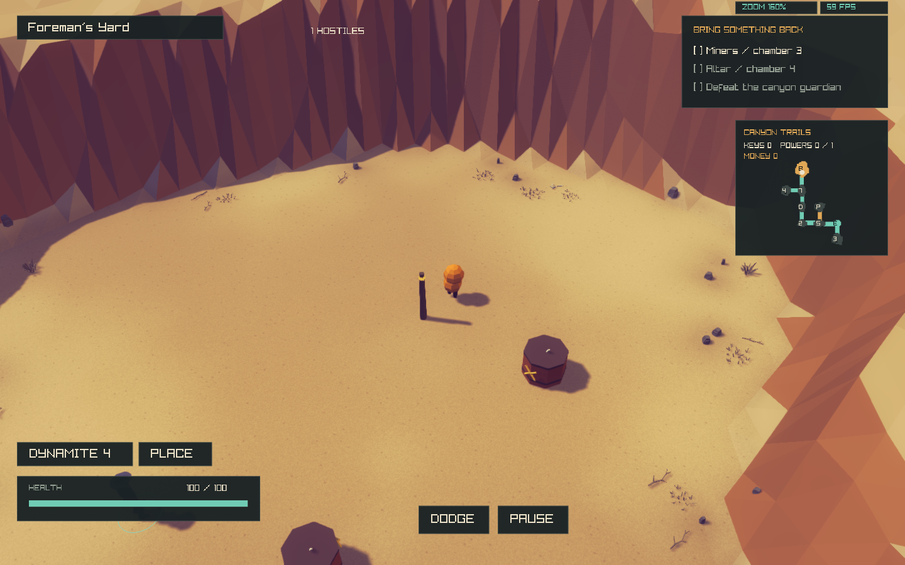
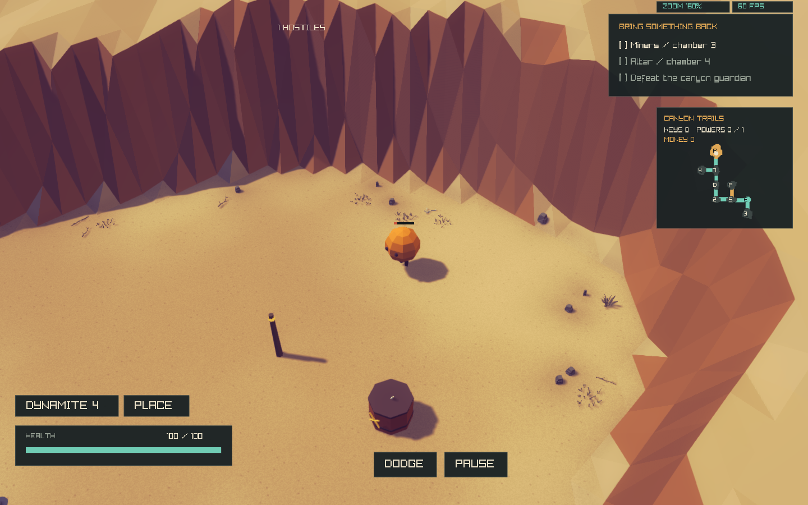
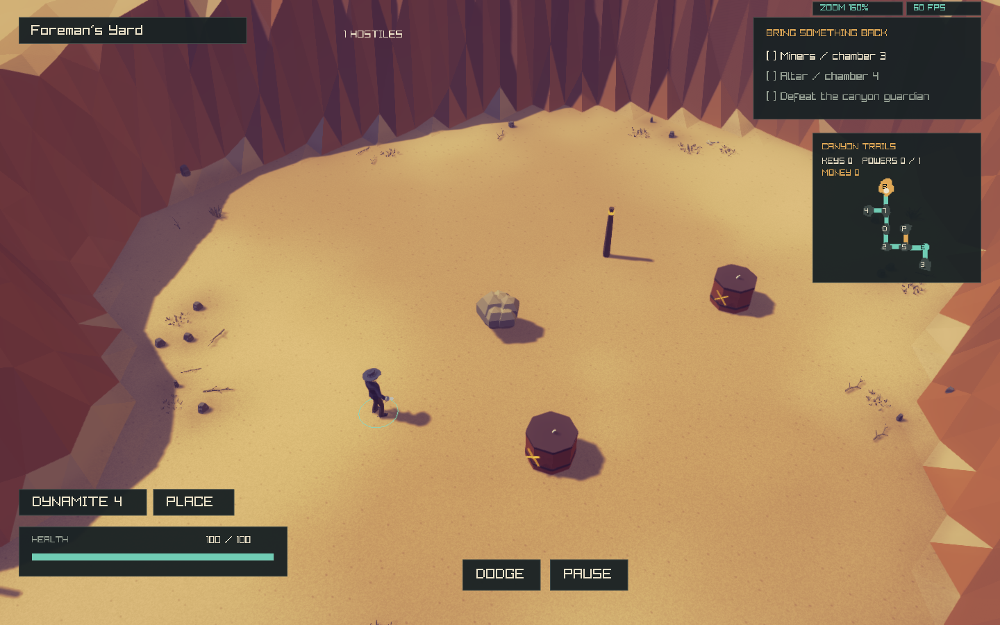
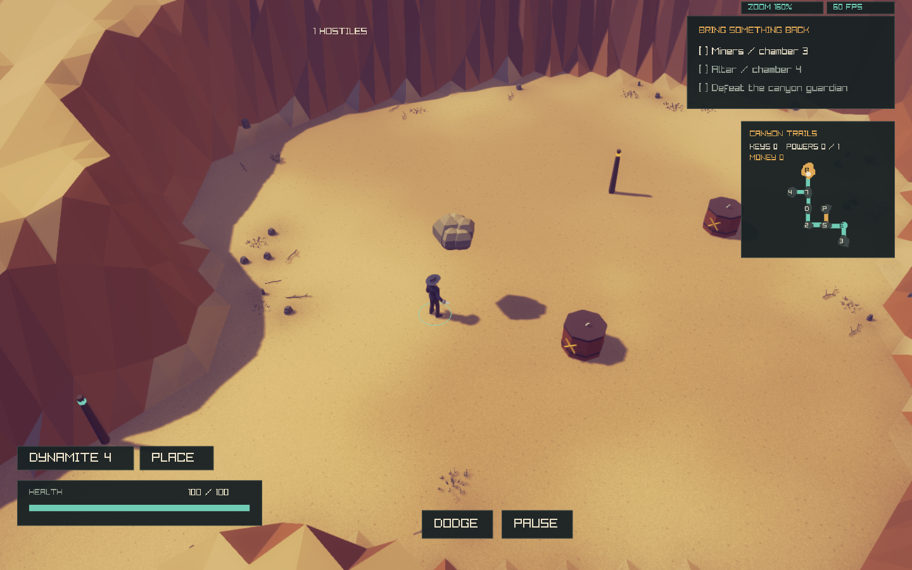
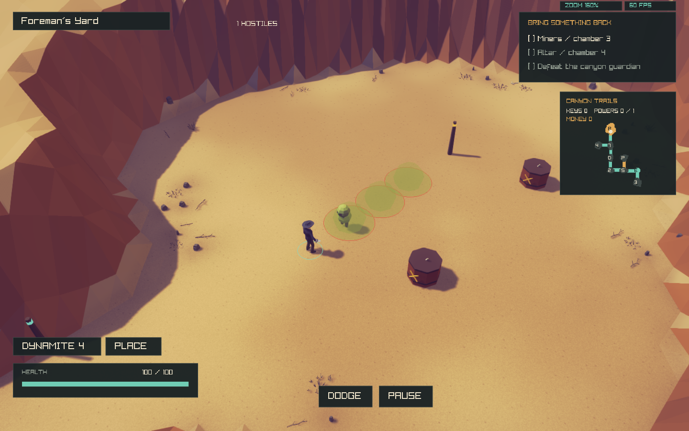
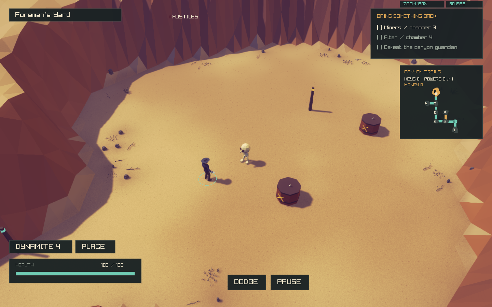
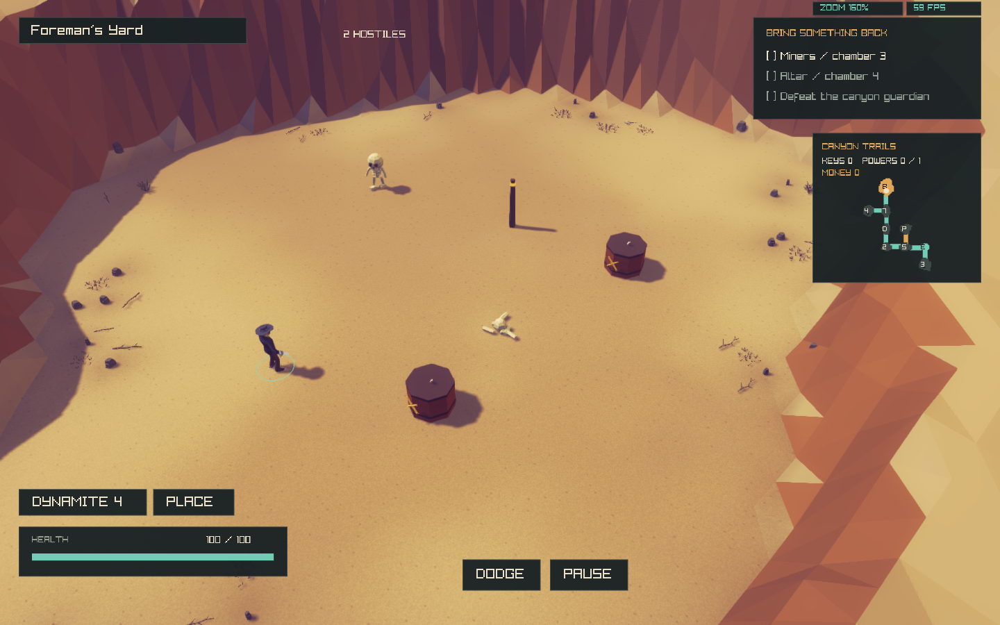
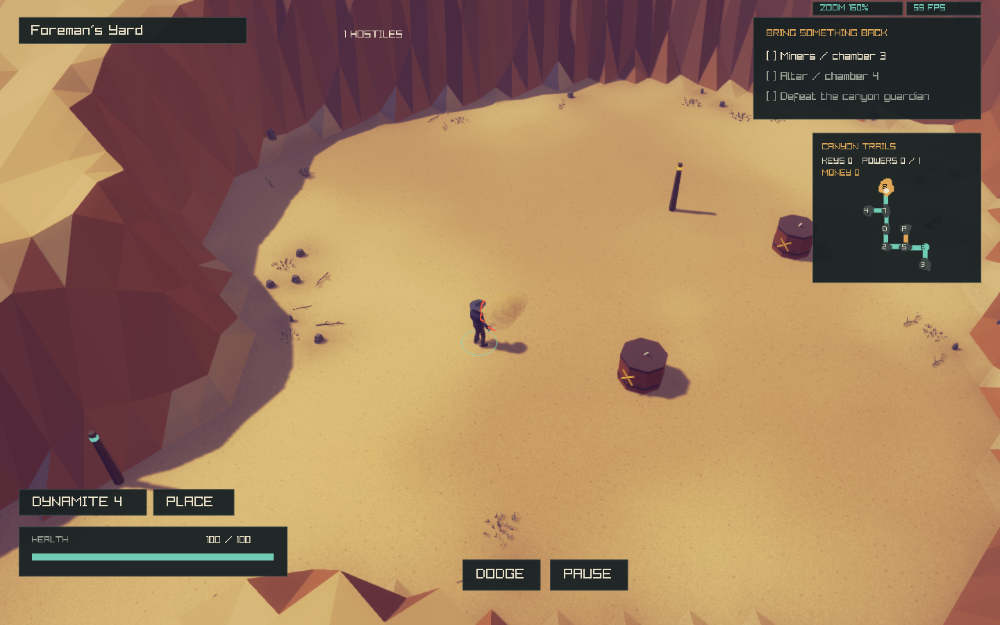
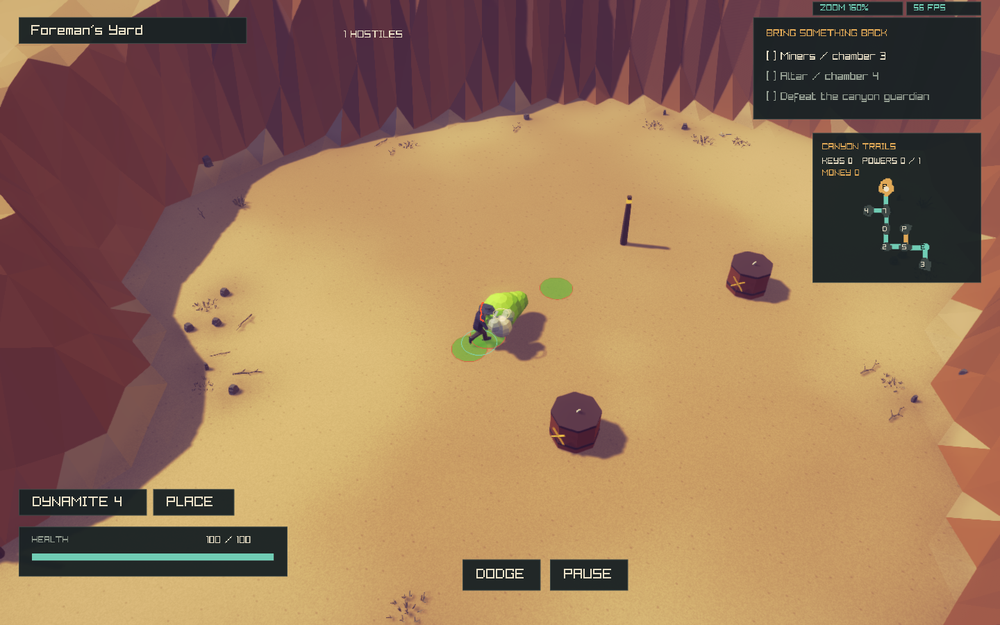
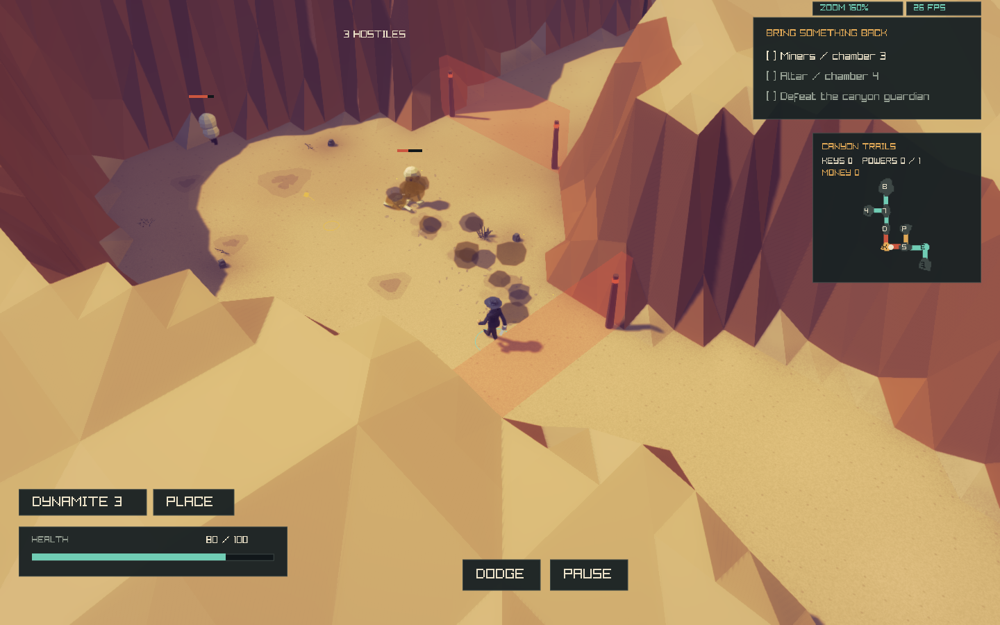

Native Linux checkpoint, 2026-10-31T18:37:36.836274+00:00. Full regular-enemy report · Machine-readable evidence and hashes
Combat implementation, not a full Isaac parity claim. All 26 champion combat types are available on the five Charger variants: 18 added here, 130 tested combinations. Bouncer, Quakey, Gas Dwarf and Clickety Clack have dedicated playable controllers. Isaac-specific champion pickup rewards and exact rarity weighting remain unfinished; ordinary DeathWard loot still applies. No record is promoted to fully accepted.
Authored placement: Mines/Ashpit-equivalent band 1. Clacks occur in groups of two. The source HP formula is retained with DeathWard's 3.2 conversion; movement, jump and gas tuning is external in creature_cycles.mechanics. Bouncer's measured native phase/volley contract is preserved in its source manifest.
Try ./build/deathward --practice-batch4. This uses normal controls, 100 HP / 24 damage, no god mode and an isolated temporary save by default. For Chargers use --practice-batch3. Forced smoke variants accept --enemy-champion 0 through 25.
New effects are scoped to Chargers. Earlier eligible families retain their previously tested eight modifiers. Native special resource drops are not implied by this table.
| ID | Type | HP | Implemented combat behavior |
|---|---|---|---|
| 0 | Red | 2.6× | More HP |
| 1 | Yellow | 1.5× | Faster, reduced champion HP |
| 2 | Green | 2× | Damaging green creep |
| 3 | Orange new | 2× | Coin loss on admitted player hits; projectile effect survives shooter removal |
| 4 | Dark Blue new | 2× | Slower movement |
| 5 | Dark Cyan | 2× | Explosion on death; retained under queue pressure |
| 6 | White new | 2× | Invulnerability until other non-White threats die; White pairs cannot softlock |
| 7 | Gray | 0.66× | Less HP and slower movement |
| 8 | Translucent new | 2× | Crosses interior obstacles/pits; spectral shots retain sealed room bounds after shooter removal |
| 9 | Black new | 2× | Visibility oscillates; damage briefly reveals |
| 10 | Magenta new | 2× | Periodic short-range shot in facing direction |
| 11 | Violet new | 2× | Attracts player and player projectiles, capped aggregate force |
| 12 | Dark Red new | 2× | Flesh pile, regeneration, can be finished off; source-frame armored Level2 integration checked |
| 13 | Light Blue | 2× | Eight radial death shots; retained capacity handling |
| 14 | Camouflage new | 2× | Low visibility; damage reveals |
| 15 | Pulsing Green new | 2× | Two ordinary copies on death, retained births |
| 16 | Pulsing Gray new | 2× | Pulsed player-projectile repulsion; never pushes player |
| 17 | Light White new | 2× | One owned Eternal Fly; release plus additional Attack Fly on death |
| 18 | Small | 0.66× | Smaller body/collision and less HP; faster; no extra shot damage |
| 19 | Large | 3× | Larger appearance, unchanged collision, more HP, slower, stronger contact |
| 20 | Pulsing Red new | 2× | Heals other enemies; excludes self, other healers, Bishops, piles and hazards |
| 21 | Pulsating new | 2× | Attack Fly on damage with cooldown; max five living/queued owned flies |
| 22 | Crown new | 6× | Sixfold HP; other ordinary enemies turn yellow without combat-stat bonuses |
| 23 | Skull new | 2× | Necronomicon-style room damage on death; stronger contact |
| 24 | Brown new | 2× | Real destructible dung trail; excludes occupied space/door approaches and checks route connectivity |
| 25 | Rainbow new | 3× | Fast, triple HP, creep, orbiter, facing shots, attraction, death explosion and eight shots; retries do not repeat explosion |
Logs: Charger/mixed suite detail · Creature detail · Native source validation · Initial regression failures · Corrected regression checks
600ticks,seed1866,circular movement,godmode,no firing: batch3mean0.0396ms/max0.422ms; batch4mean0.0363ms/max0.301ms. Rendering excluded; not full dense acceptance.
Isolated captures~60FPS; generated mixed-practice frame180capture showed26FPS versus55FPS for Charger practice. This observation is not a controlled renderer benchmark and is not certified performance parity. Later frame420capture showed45FPS after combat effects subsided. Simulation-only timing remained below0.05ms/step on average; renderer parity remains unaccepted.
Original style, procedural DeathWard geometry. These captures were inspected; they are partial visual evidence and do not establish all-angle or dense performance acceptance.









